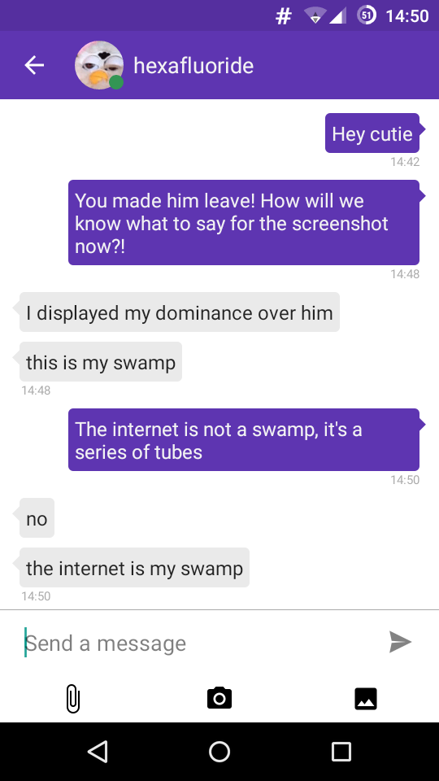
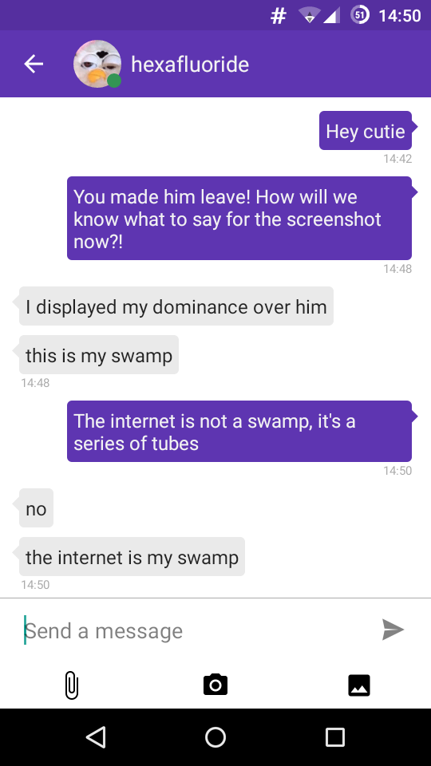

A New Kind of Instant Messaging
Whether it's corporations or governments, digital surveillence today is widespread. Tox is an easy to use application that connects you with friends and family without anyone else listening in. While other big-name services require you to pay for features, Tox is completely free and comes without advertising — forever.
Download Learn more 
